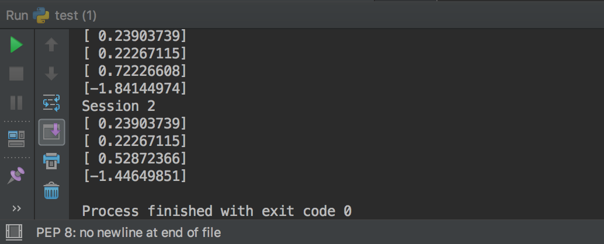
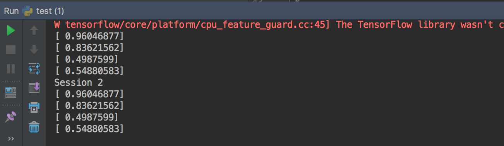
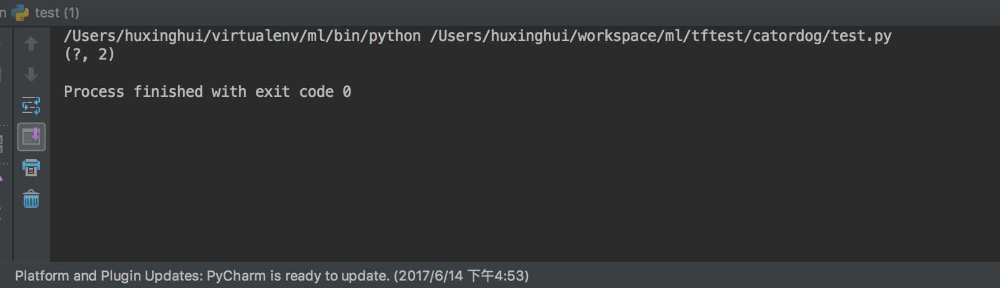
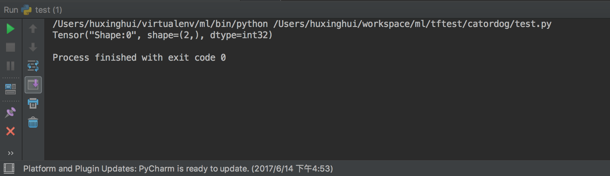

张量操作
在tensorflow中，有很多操作张量的函数，有生成张量、创建随机张量、张量类型与形状变换和张量的切片与运算
生成张量
固定值张量
tf.zeros(shape, dtype=tf.float32, name=None)
创建所有元素设置为零的张量。此操作返回一个dtype具有形状shape和所有元素设置为零的类型的张量。
tf.zeros_like(tensor, dtype=None, name=None)
给tensor定单张量（），此操作返回tensor与所有元素设置为零相同的类型和形状的张量。
tf.ones(shape, dtype=tf.float32, name=None)
创建一个所有元素设置为1的张量。此操作返回一个类型的张量，dtype形状shape和所有元素设置为1。
tf.ones_like(tensor, dtype=None, name=None)
给tensor定单张量（），此操作返回tensor与所有元素设置为1 相同的类型和形状的张量。
tf.fill(dims, value, name=None)
创建一个填充了标量值的张量。此操作创建一个张量的形状dims并填充它value。
tf.constant(value, dtype=None, shape=None, name='Const')
创建一个常数张量。
用常数张量作为例子
t1 = tf.constant([1, 2, 3, 4, 5, 6, 7])
t2 = tf.constant(-1.0, shape=[2, 3])
print(t1,t2)
我们可以看到在没有运行的时候，输出值为：
(<tf.Tensor 'Const:0' shape=(7,) dtype=int32>, <tf.Tensor 'Const_1:0' shape=(2, 3) dtype=float32>)
一个张量包含了一下几个信息
- 一个名字，它用于键值对的存储，用于后续的检索：Const: 0
- 一个形状描述， 描述数据的每一维度的元素个数：（2，3）
- 数据类型，比如int32,float32
创建随机张量
一般我们经常使用的随机数函数 Math.random() 产生的是服从均匀分布的随机数，能够模拟等概率出现的情况，例如 扔一个骰子，1到6点的概率应该相等，但现实生活中更多的随机现象是符合正态分布的，例如20岁成年人的体重分布等。
假如我们在制作一个游戏，要随机设定许许多多 NPC 的身高，如果还用Math.random()，生成从140 到 220 之间的数字，就会发现每个身高段的人数是一样多的，这是比较无趣的，这样的世界也与我们习惯不同，现实应该是特别高和特别矮的都很少，处于中间的人数最多，这就要求随机函数符合正态分布。
tf.truncated_normal(shape, mean=0.0, stddev=1.0, dtype=tf.float32, seed=None, name=None)
从截断的正态分布中输出随机值，和 tf.random_normal() 一样，但是所有数字都不超过两个标准差
tf.random_normal(shape, mean=0.0, stddev=1.0, dtype=tf.float32, seed=None, name=None)
从正态分布中输出随机值，由随机正态分布的数字组成的矩阵
# 正态分布的 4X4X4 三维矩阵，平均值 0， 标准差 1
normal = tf.truncated_normal([4, 4, 4], mean=0.0, stddev=1.0)
a = tf.Variable(tf.random_normal([2,2],seed=1))
b = tf.Variable(tf.truncated_normal([2,2],seed=2))
init = tf.global_variables_initializer()
with tf.Session() as sess:
sess.run(init)
print(sess.run(a))
print(sess.run(b))
输出：
[[-0.81131822 1.48459876]
[ 0.06532937 -2.44270396]]
[[-0.85811085 -0.19662298]
[ 0.13895047 -1.22127688]]
tf.random_uniform(shape, minval=0.0, maxval=1.0, dtype=tf.float32, seed=None, name=None)
从均匀分布输出随机值。生成的值遵循该范围内的均匀分布 [minval, maxval)。下限minval包含在范围内，而maxval排除上限。
a = tf.random_uniform([2,3],1,10)
with tf.Session() as sess:
print(sess.run(a))
tf.random_shuffle(value, seed=None, name=None)
沿其第一维度随机打乱
tf.set_random_seed(seed)
设置图级随机种子
要跨会话生成不同的序列，既不设置图级别也不设置op级别的种子：
a = tf.random_uniform([1])
b = tf.random_normal([1])
print "Session 1"
with tf.Session() as sess1:
print sess1.run(a)
print sess1.run(a)
print sess1.run(b)
print sess1.run(b)
print "Session 2"
with tf.Session() as sess2:
print sess2.run(a)
print sess2.run(a)
print sess2.run(b)
print sess2.run(b)
要为跨会话生成一个可操作的序列，请为op设置种子：
a = tf.random_uniform([1], seed=1)
b = tf.random_normal([1])
print "Session 1"
with tf.Session() as sess1:
print sess1.run(a)
print sess1.run(a)
print sess1.run(b)
print sess1.run(b)
print "Session 2"
with tf.Session() as sess2:
print sess2.run(a)
print sess2.run(a)
print sess2.run(b)
print sess2.run(b)

为了使所有op产生的随机序列在会话之间是可重复的,设置一个图级别的种子：
tf.set_random_seed(1234)
a = tf.random_uniform([1])
b = tf.random_normal([1])
print "Session 1"
with tf.Session() as sess1:
print sess1.run(a)
print sess1.run(a)
print sess1.run(b)
print sess1.run(b)
print "Session 2"
with tf.Session() as sess2:
print sess2.run(a)
print sess2.run(a)
print sess2.run(b)
print sess2.run(b)
我们可以看到结果

张量变换
TensorFlow提供了几种操作，您可以使用它们在图形中改变张量数据类型。
改变类型
提供了如下一些改变张量中数值类型的函数
- tf.string_to_number(string_tensor, out_type=None, name=None)
- tf.to_double(x, name='ToDouble')
- tf.to_float(x, name='ToFloat')
- tf.to_bfloat16(x, name='ToBFloat16')
- tf.to_int32(x, name='ToInt32')
- tf.to_int64(x, name='ToInt64')
- tf.cast(x, dtype, name=None)
我们用一个其中一个举例子
tf.string_to_number(string_tensor, out_type=None, name=None)
将输入Tensor中的每个字符串转换为指定的数字类型。注意，int32溢出导致错误，而浮点溢出导致舍入值
n1 = tf.constant(["1234","6789"])
n2 = tf.string_to_number(n1,out_type=tf.types.float32)
sess = tf.Session()
result = sess.run(n2)
print result
sess.close()
形状和变换
可用于确定张量的形状并更改张量的形状
- tf.shape(input, name=None)
- tf.size(input, name=None)
- tf.rank(input, name=None)
- tf.reshape(tensor, shape, name=None)
- tf.squeeze(input, squeeze_dims=None, name=None)
- tf.expand_dims(input, dim, name=None)
tf.shape(input, name=None)
返回张量的形状。
t = tf.constant([[[1, 1, 1], [2, 2, 2]], [[3, 3, 3], [4, 4, 4]]])
shape(t) -> [2, 2, 3]
静态形状与动态形状
静态维度 是指当你在创建一个张量或者由操作推导出一个张量时，这个张量的维度是确定的。它是一个元祖或者列表。TensorFlow将尽最大努力去猜测不同张量的形状（在不同操作之间），但是它不会总是能够做到这一点。特别是如果您开始用未知维度定义的占位符执行操作。tf.Tensor.get_shape方法读取静态形状
t = tf.placeholder(tf.float32,[None,2])
print(t.get_shape())
结果

动态形状 当你在运行你的图时，动态形状才是真正用到的。这种形状是一种描述原始张量在执行过程中的一种张量。如果你定义了一个没有标明具体维度的占位符，即用None表示维度，那么当你将值输入到占位符时，这些无维度就是一个具体的值，并且任何一个依赖这个占位符的变量，都将使用这个值。tf.shape来描述动态形状
t = tf.placeholder(tf.float32,[None,2])
print(tf.shape(t))

tf.squeeze(input, squeeze_dims=None, name=None)
这个函数的作用是将input中维度是1的那一维去掉。但是如果你不想把维度是1的全部去掉，那么你可以使用squeeze_dims参数，来指定需要去掉的位置。
import tensorflow as tf
sess = tf.Session()
data = tf.constant([[1, 2, 1], [3, 1, 1]])
print sess.run(tf.shape(data))
d_1 = tf.expand_dims(data, 0)
d_1 = tf.expand_dims(d_1, 2)
d_1 = tf.expand_dims(d_1, -1)
d_1 = tf.expand_dims(d_1, -1)
print sess.run(tf.shape(d_1))
d_2 = d_1
print sess.run(tf.shape(tf.squeeze(d_1)))
print sess.run(tf.shape(tf.squeeze(d_2, [2, 4])))
tf.expand_dims(input, dim, name=None)
该函数作用与squeeze相反,添加一个指定维度
import tensorflow as tf
import numpy as np
sess = tf.Session()
data = tf.constant([[1, 2, 1], [3, 1, 1]])
print sess.run(tf.shape(data))
d_1 = tf.expand_dims(data, 0)
print sess.run(tf.shape(d_1))
d_1 = tf.expand_dims(d_1, 2)
print sess.run(tf.shape(d_1))
d_1 = tf.expand_dims(d_1, -1)
print sess.run(tf.shape(d_1))
切片与扩展
TensorFlow提供了几个操作来切片或提取张量的部分，或者将多个张量加在一起
- tf.slice(input_, begin, size, name=None)
- tf.split(split_dim, num_split, value, name='split')
- tf.tile(input, multiples, name=None)
- tf.pad(input, paddings, name=None)
- tf.concat(concat_dim, values, name='concat')
- tf.pack(values, name='pack')
- tf.unpack(value, num=None, name='unpack')
- tf.reverse_sequence(input, seq_lengths, seq_dim, name=None)
- tf.reverse(tensor, dims, name=None)
- tf.transpose(a, perm=None, name='transpose')
- tf.gather(params, indices, name=None)
- tf.dynamic_partition(data, partitions, num_partitions, name=None)
- tf.dynamic_stitch(indices, data, name=None)
其它一些张量运算（了解查阅）
张量复制与组合
- tf.identity(input, name=None)
- tf.tuple(tensors, name=None, control_inputs=None)
- tf.group(inputs, *kwargs)
- tf.no_op(name=None)
- tf.count_up_to(ref, limit, name=None)
逻辑运算符
- tf.logical_and(x, y, name=None)
- tf.logical_not(x, name=None)
- tf.logical_or(x, y, name=None)
- tf.logical_xor(x, y, name='LogicalXor')
比较运算符
- tf.equal(x, y, name=None)
- tf.not_equal(x, y, name=None)
- tf.less(x, y, name=None)
- tf.less_equal(x, y, name=None)
- tf.greater(x, y, name=None)
- tf.greater_equal(x, y, name=None)
- tf.select(condition, t, e, name=None)
- tf.where(input, name=None)
判断检查
- tf.is_finite(x, name=None)
- tf.is_inf(x, name=None)
- tf.is_nan(x, name=None)
- tf.verify_tensor_all_finite(t, msg, name=None) 断言张量不包含任何NaN或Inf
- tf.check_numerics(tensor, message, name=None)
- tf.add_check_numerics_ops()
- tf.Assert(condition, data, summarize=None, name=None)
- tf.Print(input_, data, message=None, first_n=None, summarize=None, name=None)